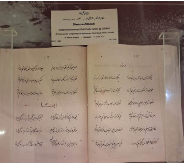

Audio Explanation:
Audio for selected language is not available.
সুলতান মুহাম্মদ কুতুব শাহের কবিতা

ক্যাটালগ নম্বর ১৮৪৫
এটি গোলকোন্ডার সুলতান মুহাম্মদ কুতুব শাহের রচিত কবিতার একটি সংকলন। কবিতাগুলি ১০২০ থেকে ১০৩৫ হিজরি, অর্থাৎ আনুমানিক ১৬১২ থেকে ১৬২৬ খ্রিস্টাব্দের মধ্যে রচিত হয়েছিল। সুলতান তাঁর কবিতায় ‘জিল্লুল্লাহ’ এবং ‘সুলতান’—এই দুটি কবিনাম ব্যবহার করতেন। এই পাণ্ডুলিপিতে রয়েছে কাসিদা, রুবাইয়াত এবং মার্সিয়া-র সমৃদ্ধ সংকলন, যা কুতুবশাহী দরবারের পরিশীলিত সাহিত্য-সংস্কৃতির পরিচয় বহন করে। পাণ্ডুলিপিটি নস্তালিক ও নাসখ—এই দুই লিপির এক নান্দনিক সমন্বয়ে লেখা হয়েছে, যা এর রাজদরবার-সংক্রান্ত উৎসের ইঙ্গিত বহন করে। পাণ্ডুলিপিটি ক্যাটালগ নম্বর ১৮৪৫-এর অধীনে সংরক্ষিত রয়েছে। দাক্ষিণাত্য অঞ্চলের ফারসি কবিতা এবং রাজদরবারের সাহিত্যপৃষ্ঠপোষকতা নিয়ে গবেষণার ক্ষেত্রে এটি একটি গুরুত্বপূর্ণ ঐতিহাসিক নিদর্শন।
Poems of Sultan Muhammad Qutb Shah
Catalogue No. 1845
Poems of Sultan Muhammad Qutb Shah of Golconda composed during 1020 – 1035 Hijri 1612 – 126 A.D. The Sultan wrote under the poetic pen names: Zillal-lah:, and “Sultan”. This manuscript contains a rich selection of Qasidas, Rubaiyat, and Marthiyas, reflecting the refined literary culture of the Qutb Shahi court. It is written in an elegant combination of Nastaliq and Naskh scripts, indicating its royal provenance. The manuscript is catalogued under Catalogue No. 1845 and is significant for the study of Deccani Persian poetry and royal literary patronage.
സുൽത്താൻ മുഹമ്മദ് കുത്ബ് ഷായുടെ കവിതകൾ
കാറ്റലോഗ് നമ്പർ 1845
1020 - 1035 ഹിജ്റ (ക്രി.വ. 1612 - 1626) കാലഘട്ടത്തിൽ ഗൊൽക്കൊണ്ടയിലെ സുൽത്താൻ മുഹമ്മദ് കുത്ബ് ഷാ രചിച്ച കവിതകൾ. 'ദില്ലാഹ്', 'സുൽത്താൻ' എന്നീ കാവ്യനാമങ്ങളിലാണ് സുൽത്താൻ കവിതകൾ എഴുതിയിരുന്നത്. കുത്ബ് ഷാഹി കൊട്ടാരത്തിന്റെ ഉന്നതമായ സാഹിത്യ സംസ്കാരത്തെ പ്രതിഫലിപ്പിക്കുന്ന ഖസീദകൾ റുബായികൾ, മർസിയകൾ എന്നിവയുടെ മികച്ച ശേഖരം ഈ കൈയെഴുത്തുപ്രതിയിലുണ്ട്. നസ്തലീഖ്, നസ്ഖ് ലിപികളുടെ മനോഹരമായ സംയോജനത്തിലാണ് ഇത് എഴുതിയിരിക്കുന്നത്, ഇത് ഇതിന്റെ രാജകീയ പാരമ്പര്യത്തെ സൂചിപ്പിക്കുന്നു. കാറ്റലോഗ് നമ്പർ 1845 ആയി രേഖപ്പെടുത്തിയിരിക്കുന്ന ഈ കൈയെഴുത്തുപ്രതി ദഖ്ഖനി പേർഷ്യൻ കവിതകളുടെയും രാജകീയ സാഹിത്യ രക്ഷാകർതൃത്വത്തിന്റെയും പഠനത്തിന് വളരെ പ്രധാനപ്പെട്ടതാണ്.
سلطان محمد قطب شاہ کی نظمیں
اندراج نمبر 1845
گولکنڈہ کے سلطان محمد قطب شاہ کی یہ نظمیں 1020 تا 1035 ہجری، مطابق 1612 تا 1626 عیسوی کے دوران لکھی گئی تھیں۔ سلطان نے شاعری میں ذِلّ اللہ اور سلطان کے قلمی نام استعمال کیے۔ اس مخطوطے میں قصائد، رباعیات اور مراثی کا ایک بھرپور انتخاب شامل ہے، جو قطب شاہی دربار کی شائستہ اور ترقی یافتہ ادبی روایت کی عکاسی کرتا ہے۔ یہ مخطوطہ نستعلیق اور نسخ رسم الخط کے خوب صورت امتزاج میں تحریر کیا گیا ہے، جس سے اس کے شاہی تعلق کا اندازہ ہوتا ہے۔ اس مخطوطے کا اندراج نمبر 1845 ہے اور یہ دکنی فارسی شاعری اور شاہی ادبی سرپرستی کے مطالعے کے لیے اہمیت رکھتا ہے۔
સુલ્તાન મુહમ્મદ કુતુબ શાહની કવિતાઓ
સૂચિ ક્રમાંક 1845
ગોલકોંડાના સુલતાન મુહમ્મદ કુતુબ શાહની કવિતાઓ (સૂચિ ક્રમાંક 1845) આ કવિતાઓ ગોલકોંડાના સુલતાન મુહમ્મદ કુતુબ શાહ દ્વારા ૧૦૨૦ થી ૧၀૩૫ હિજરી (૧૬૧૨ થી ૧૬૨૬ ઈસવીસન) ના સમયગાળા દરમિયાન રચવામાં આવી હતી. સુલતાન "ઝિલ્લાલ-લાહ" અને "સુલતાન" જેવા કાવ્યિક ઉપનામોથી લેખન કરતા હતા. આ હસ્તપ્રતમાં કસીદા (પ્રશસ્તિ કાવ્યો), રુબાઈયાત (ચાર લીટીની ચતુષ્પદીઓ) અને મર્શિયા (શોકગીતો) નો સમૃદ્ધ સંગ્રહ છે, જે કુતુબશાહી દરબારની અત્યાધુનિક સાહિત્યિક સંસ્કૃતિને પ્રતિબિંબિત કરે છે. તે શાહી રાજવી કલાને દર્શાવતી નાસ્તલીક અને નસ્ખ લિપિના સુંદર મિશ્રણ સાથે લખાયેલી છે. આ હસ્તપ્રત સૂચિ ક્રમાંક 1845 હેઠળ નોંધાયેલી છે અને દખ્ખણી ફારસી કવિતા તથા શાહી સાહિત્યિક પ્રોત્સાહનનો અભ્યાસ કરવા માટે ખૂબ જ મહત્વપૂર્ણ છે.
சுல்தான் முகம்மது குதுப் ஷாவின் கவிதைகள்
பட்டியல் எண் 1845
கோல்கொண்டா சுல்தான் முகம்மது குதுப் ஷாவால் 1020–1035 ஹிஜ்ரி, 1612–1626 கி.பி. காலப்பகுதியில் இயற்றப்பட்ட கவிதைகள் இக்கையெழுத்துப் பிரதியில் இடம்பெற்றுள்ளன. சுல்தான் “ஜில்லல்லாஹ்” மற்றும் “சுல்தான்” என்ற புனைப்பெயர்களில் கவிதைகளை இயற்றினார். குதுப் ஷாஹி அரசவையின் செழுமையான இலக்கியப் பண்பாட்டை வெளிப்படுத்தும் வகையில் கஸீதா, ருபாயியாத் மற்றும் மர்சியா ஆகிய கவிதை வகைகளின் சிறப்பான தொகுப்பு இதில் இடம்பெற்றுள்ளது. இது நஸ்தஅலீக் மற்றும் நஸ்க் எழுத்துமுறைகளின் நேர்த்தியான கலவையில் எழுதப்பட்டுள்ளது. இது அரசவையுடன் தொடர்புடைய பிரதியாக இருந்ததை இது சுட்டிக்காட்டுகிறது. இக்கையெழுத்துப் பிரதி பட்டியல் எண் 1845-ன் கீழ் பதிவு செய்யப்பட்டுள்ளது. தெக்காணப் பாரசீகக் கவிதை மற்றும் அரசவையின் இலக்கிய ஆதரவை ஆய்வு செய்வதற்கு இது முக்கியத்துவம் வாய்ந்ததாகும்.
ಸುಲ್ತಾನ್ ಮುಹಮ್ಮದ್ ಕುತುಬ್ ಷಾ ಅವರ ಕವಿತೆಗಳು
ಕ್ಯಾಟಲಾಗ್ ಸಂಖ್ಯೆ 1845
1020 - 1035 ಹಿಜ್ರಿ (ಕ್ರಿ.ಶ. 1612 - 1626) ಅವಧಿಯಲ್ಲಿ ರಚಿತವಾದ ಗೋಲ್ಕೊಂಡದ ಸುಲ್ತಾನ್ ಮುಹಮ್ಮದ್ ಕುತುಬ್ ಷಾ ಅವರ ಕವಿತೆಗಳ ಸಂಗ್ರಹ ಇದಾಗಿದೆ. ಸುಲ್ತಾನರು 'ಝಿಲ್ಲಾಲ್-ಲಾಹ್' ಮತ್ತು 'ಸುಲ್ತಾನ್' ಎಂಬ ಕಾವ್ಯನಾಮಗಳಲ್ಲಿ ಸಾಹಿತ್ಯ ರಚನೆ ಮಾಡುತ್ತಿದ್ದರು. ಈ ಹಸ್ತಪ್ರತಿಯು ಕಸೀದಾ, ರುಬಾಯಿಯಾತ್ ಮತ್ತು ಮರ್ತಿಯಾಗಳ ಸಮೃದ್ಧ ಆಯ್ಕೆಯನ್ನು ಒಳಗೊಂಡಿದ್ದು, ಕುತುಬ್ ಶಾಹಿ ಆಸ್ಥಾನದ ಪರಿಷ್ಕೃತ ಸಾಹಿತ್ಯಿಕ ಸಂಸ್ಕೃತಿಯನ್ನು ಪ್ರತಿಬಿಂಬಿಸುತ್ತದೆ. ಇದನ್ನು ನಸ್ತಲಿಕ್ ಮತ್ತು ನಸ್ಖ್ ಲಿಪಿಗಳ ಸೊಗಸಾದ ಸಂಯೋಜನೆಯಲ್ಲಿ ಬರೆಯಲಾಗಿದ್ದು, ಇದರ ರಾಜಮನೆತನದ ಮೂಲವನ್ನು ತೋರಿಸುತ್ತದೆ. ಕಟಲಾಗ್ ಸಂಖ್ಯೆ 1845 ರ ಅಡಿಯಲ್ಲಿ ಪಟ್ಟಿಮಾಡಲಾದ ಈ ಹಸ್ತಪ್ರತಿಯು ದಖ್ಖನಿ ಪರ್ಷಿಯನ್ ಕಾವ್ಯ ಮತ್ತು ರಾಜಮನೆತನದ ಸಾಹಿತ್ಯಿಕ ಪೋಷಣೆಯ ಅಧ್ಯಯನಕ್ಕೆ ಅತ್ಯಂತ ಮಹತ್ವದ್ದಾಗಿದೆ.
సుల్తాన్ ముహమ్మద్ కుతుబ్ షా కవితలు
కేటలాగ్ సంఖ్య 1845
గోల్కొండ సుల్తాన్ ముహమ్మద్ కుతుబ్ షా రచించిన కవితలు, హిజ్రీ 1020 మరియు 1035 మధ్య (క్రీస్తుశకం. 1612 మరియు 126 మధ్య) వ్రాయబడ్డాయి. సుల్తాన్ 'జిల్లా-ఉల్-లా' మరియు 'సుల్తాన్' అనే కలం పేర్లతో కవిత్వం రాశారు. ఈ తాళపత్ర గ్రంథంలో కుతుబ్ షాహీ ఆస్థానం యొక్క గొప్ప సాహిత్య సంస్కృతిని ప్రతిబింబించే ఖసీదాలు, రుబాయియాత్లు మరియు మరాఠీయాల యొక్క పెద్ద సేకరణ ఉంది. ఇది నస్తాలిఖ్ మరియు నస్ఖ్ లిపుల అద్భుతమైన కలయికలో వ్రాయబడింది, ఇది దాని రాజరిక మూలాలను సూచిస్తుంది. ఈ తాళపత్ర గ్రంథం కేటలాగ్ సంఖ్య 1845 క్రింద జాబితా చేయబడింది మరియు దక్కనీ పర్షియన్ కవిత్వం మరియు రాజరిక సాహిత్య పోషణ అధ్యయనానికి ఇది ఒక ఆధారం.
ସୁଲତାନ୍ ମୁହମ୍ମଦ କୁତୁବ୍ ଶାହଙ୍କ କବିତାବଳୀ
କାଟାଲଗ୍ ନମ୍ବର 1845
ଏହି ପାଣ୍ଡୁଲିପିଟି 1020 ରୁ 1035 ହିଜରୀ, ଖ୍ରୀଷ୍ଟାବ୍ଦ 1612 ରୁ 1626 ମଧ୍ୟରେ ସଂଯୋଜିତ ଗୋଲକୋଣ୍ଡାର ସୁଲତାନ୍ ମୁହମ୍ମଦ କୁତୁବ୍ ଶାହଙ୍କ କବିତାବଳୀର ଏକ ଅମୂଲ୍ୟ ସଂଗ୍ରହ। ସୁଲତାନ୍ ନିଜ କାବ୍ୟରଚନାରେ ଭଣିତା ପାଇଁ 'ଜିଲ୍ଲାଲ୍-ଲାହ' ଏବଂ 'ସୁଲତାନ୍' ଭଳି ଛଦ୍ମନାମ ବ୍ୟବହାର କରୁଥିଲେ। ଏହି ଗ୍ରନ୍ଥଟିରେ 'କସିଦା' (ସ୍ତୁତିକାବ୍ୟ), 'ରୁବାଇୟାତ୍' (ଚତୁଷ୍ପଦୀ କବିତା) ଏବଂ 'ମର୍ସିୟା' (ଶୋକଗୀତି)ର ଏକ ସମୃଦ୍ଧ ସଂକଳନ ସ୍ଥାନ ପାଇଛି, ଯାହା କୁତୁବ୍ ଶାହୀ ରାଜସଭାର ଅତ୍ୟନ୍ତ ମାର୍ଜିତ ଓ ସଂସ୍କୃତ ସାହିତ୍ୟିକ ପରମ୍ପରାକୁ ପ୍ରତିଫଳିତ କରେ। ଏହା 'ନସ୍ତାଲିକ୍' ଏବଂ 'ନସଖ୍' ଲିପିର ଏକ ମନୋରମ ସମ୍ମିଶ୍ରଣରେ ଲିଖିତ, ଯାହା ଏହାର ରାଜକୀୟ ଉତ୍ପତ୍ତି ଓ ଶ୍ରେଷ୍ଠତାକୁ ସୂଚିତ କରିଥାଏ। ଦାକ୍ଷିଣାତ୍ୟ ଫାର୍ସୀ କାବ୍ୟସାହିତ୍ୟର ଅଧ୍ୟୟନ ଏବଂ ତତ୍କାଳୀନ ରାଜକୀୟ ସାହିତ୍ୟିକ ପୃଷ୍ଠପୋଷକତାକୁ ବୁଝିବା ପାଇଁ କାଟାଲଗ୍ ନମ୍ବର 1845 ଅନ୍ତର୍ଗତ ଏହି ପାଣ୍ଡୁଲିପିଟି ଅତ୍ୟନ୍ତ ମହତ୍ତ୍ୱପୂର୍ଣ୍ଣ।
सुल्तान मुहम्मद क़ुतुब शाह की कविताएँ
कैटलॉग संख्या 1845
गोलकुंडा के सुल्तान मुहम्मद क़ुतुब शाह की कविताएँ, जिनकी रचना 1020 – 1035 हिजरी (1612 – 1626 ईस्वी) के दौरान की गई थी। सुल्तान ने काव्य उपनाम (तख़ल्लुस) "ज़िल्लुल्लाह" और "सुल्तान" नाम से रचनाएँ कीं। इस पांडुलिपि में क़सीदों, रुबाइयों और मरसियों का एक समृद्ध चयन शामिल है, जो क़ुतुब शाही दरबार की परिष्कृत साहित्यिक संस्कृति को दर्शाता है। यह नस्तलीक़ और नस्ख़ लिपियों के एक उत्कृष्ट संयोजन में लिखी गई है, जो इसके शाही मूल (उत्पत्ति) को दर्शाती है। यह पांडुलिपि कैटलॉग संख्या 1845 के तहत सूचीबद्ध है और दक्कनी फ़ारसी कविता तथा शाही साहित्यिक संरक्षण के अध्ययन के लिए अत्यंत महत्वपूर्ण है।
सुलतान मुहम्मद कुतुब शाह यांच्या कविता
कॅटलॉग क्रमांक 1845
गोवळकोंड्याचे सुलतान मुहम्मद कुतुब शाह यांच्या कविता, ज्या 1020 ते 1035 हिजरी (1612 ते 1626 इसवी सन) दरम्यान रचल्या गेल्या. सुलतानाने 'जिल्लल्लाह' आणि 'सुलतान' या टोपणनावांनी काव्यरचना केली. या हस्तलिखितात कसिदा, रुबाया आणि मर्सिया यांचा उत्कृष्ट संग्रह आहे, जो कुतुबशाही दरबारातील समृद्ध साहित्यिक संस्कृती दर्शवतो. ते नस्तालिक आणि नस्ख लिपींच्या सुंदर मिश्रणात लिहिले गेले आहे, जे त्याचे शाही मूळ स्पष्ट करते. हे हस्तलिखित कॅटलॉग नंबर 1845 अंतर्गत नोंदवलेले असून, दख्खनी पर्शियन कविता आणि शाही साहित्यिक आश्रयाच्या अभ्यासासाठी ते अत्यंत महत्त्वाचे आहे.